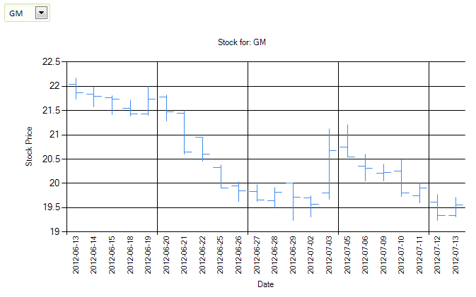

How to write a charting application from a Web service
Requires feature pack Chart Controls for the Dialog Component or subscriptionAlpha Software used to position its products as database application development tools. The way our Ajax Grid and Report engine are designed, that was largely true: you couldn't get much built unless you had a database, be it SQL or DBF.
That's no longer the case, however. In the two videos we're going to discuss, Selwyn Rabins shows you how to build a stock charting application that uses a REST Web service call to Yahoo! Stocks to populate a high-low-close chart, without sending the data by way of a local database. Now, it's not that there's any dearth of Stock Charting applications in the world, but think about it: a high-low-close chart (or any other form of time-series chart) is also useful for other data that varies with time, be it daily factory production yield ranges or minute-by-minute patient blood pressure range readings in a hospital setting.
Selwyn starts this video by demonstrating the application, and then lifts the covers to show you how it was done. It is best viewed full-screen.
Flash player not available.
Alternate video link
The key code discussed above is:
dim url as c = "http://ichart.finance.yahoo.com/table.csv?a="+month+"&b="+dayNumber+"&c="+year+"&s="+ticker dim data as c = http_get_page2(url) 'data returned by yahoo is chr(10) delimited, not crlf delimited! 'data is returned with newest data on top. we want oldest data on top, so sort the data. data = word(data,2,chr(10),999999) data = strtran(data,",","|") data = sortsubstr(data,chr(10),"A")
Basically, all we have to do is to construct the correct URI for the stock we want, get the page associated with that URI, and massage the data a little so that it is in the correct format for the chart.
In the second half of the video, Selwyn debugs through the call and lets you see the data, then shows you how the ticker name is retrieved from the drop-down and put into the chart to implement the dynamic title.
Flash player not available.
Alternate video link
How cool is that?

You can download the component used for this application from here